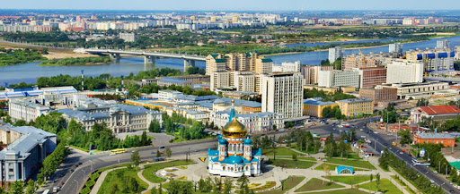
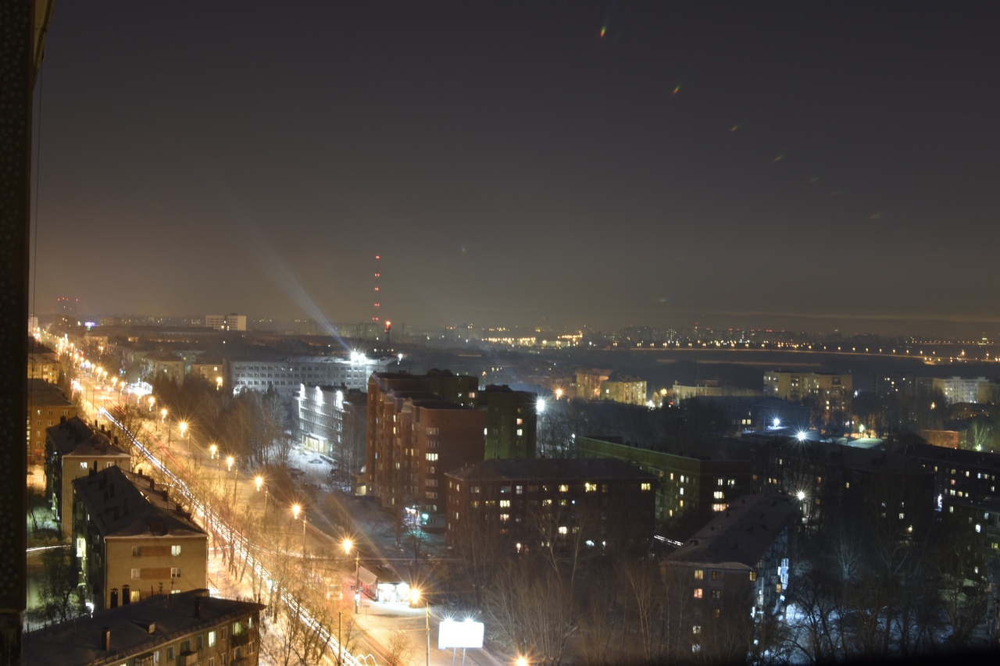
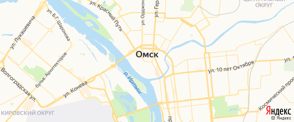

Омск

Омск — один из крупнейших городов России, расположенный на слиянии рек Иртыша и Оми, крупный научный, культурный, спортивный и промышленный центр. Город трудовой славы. Основан в 1716 году. Официально получил статус города в 1782 году. Столица Российского государства (1918—1920). С 1934 года — административный центр Омской области.

Город-миллионник — 1 164 815 чел. (2019), второй по численности населения в Сибири и восьмой в России. Крупный транспортный узел: с запада на восток через город проходит железнодорожная Транссибирская магистраль, а с юга на север — судоходная река Иртыш.

Омск расположен на юге Западно-Сибирской равнины в южной подзоне лесостепной зоны на месте впадения в Иртыш реки Омь в 150 км от границы с Казахстаном. Он занимает речную долину: пойму, первую и вторую надпойменные террасы и коренной берег. Первая надлуговая терраса правобережья Иртыша пологим склоном переходит ко второй; здесь расположена большая часть города. К востоку и северо-востоку высоты нарастают, здесь находится вторая надпойменная терраса и начало водораздельной зоны, разделённой на две части долиной Оми. В пределах города имеется две крупные реки, многочисленные мелкие речушки, а также озёра и протоки. Протяжённость Иртыша в городской черте более 25 км.